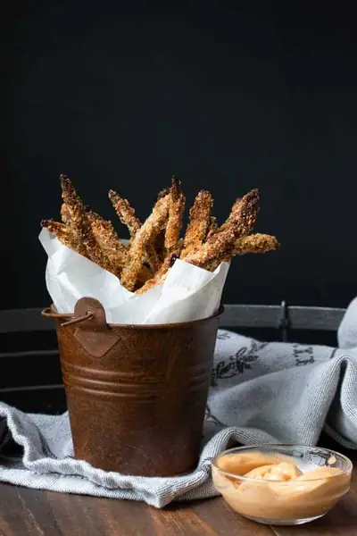

Oven Baked Asparagus Fries Recipe

Ingredients
- 1 bunch asparagus (, stalks trimmed and cut in half if you want shorter fries)
- 1 tablespoon maple syrup
- a drizzle of your favorite cooking oil (, optional)
- 1 teaspoon smoked paprika
- 10 tablespoons almond flour
- 1/4 cup breadcrumbs (, gluten-free if needed)
- 2 tablespoons cornmeal
- 1 teaspoon sea salt
- ½ teaspoon ground black pepper
Steps
- Preheat oven to 400°F/ 200°C
- Put asparagus in a flat pan (you can use a bowl but they may not lay flat) and mix with maple syrup, oil if using and smoked paprika. Mix to fully coat.
- Place almond flour, breadcrumbs, cornmeal, salt and pepper in another bowl or pan and mix to combine.
- One by one, put asparagus in the dry ingredient mix and toss to coat well. You can also add the dry coating in a plastic bag, place all the asparagus inside and shake to coat. This method is quicker but may not coat them as well.
- Place the coated asparagus on a parchment lined baking sheet and bake for 30-35 minutes or until golden brown. Serve with your favorite dip.
Recipe by Anjali Shah, from The Picky Eater. Saved here for personal use; the original has the full notes, tips and photos. Open original